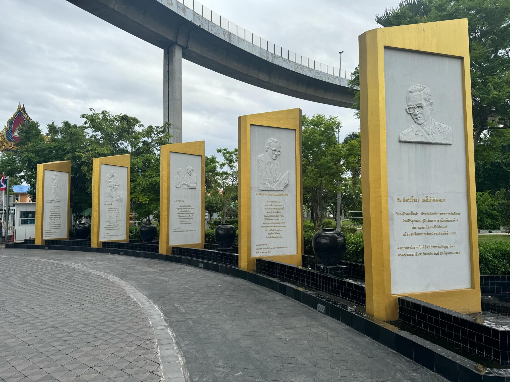
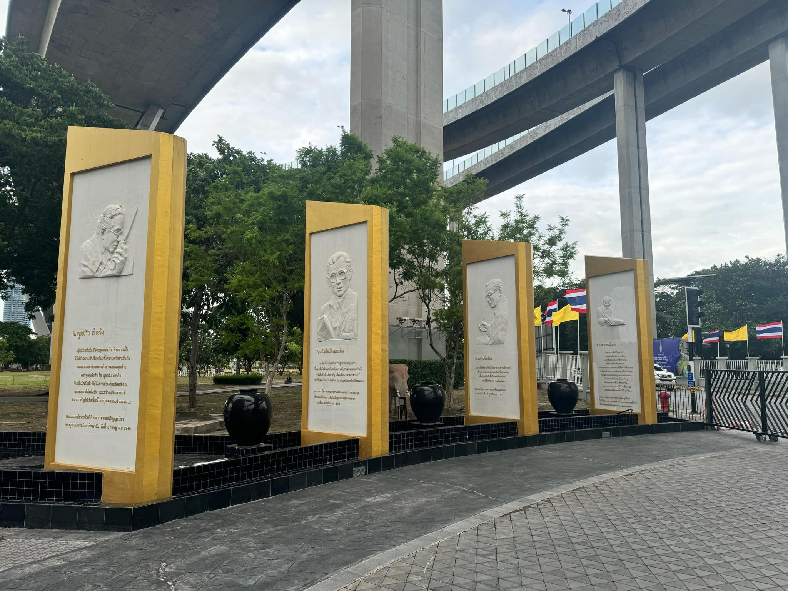

9 คำสอนของพระบาทสมเด็จพระเจ้าอยู่หัว


คําสอนทั้ง 9 ข้อ
- ความเพียร : การสร้างสรรค์ตนเอง การสร้างบ้านเมืองก็ตาม มิใช่ว่าสร้างในวันเดียว ต้องใช้เวลา ต้องใช้ความเพียร ต้องใช้ความอดทน เสียสละ
- ความพอดี : ในการสร้างตัวสร้างฐานะนั้นจะต้องถือหลักค่อยเป็นค่อยไป ด้วยความรอบคอบ ระมัดระวังและความพอเหมาะพอดี ไม่ทำเกินฐานะและกำลัง
- ความรู้ตน : เด็กๆ ทำอะไรต้องหัดให้รู้ตัว การรู้ตัวอยู่เสมอจะทำให้เป็นคนมีระเบียบและคนที่มีระเบียบดีแล้ว จะสามารถเล่าเรียนและทำการงานต่างๆ ได้โดยถูกต้องรวดเร็ว
- คนเราจะต้องรับและจะต้องให้ : คนเราจะเอาแต่ได้ไม่ได้ คนเราจะต้องรับและจะต้องให้ หมายความว่าต่อไป และเดี๋ยวนี้ด้วยเมื่อรับสิ่งของใดมา ก็จะต้องพยายามให้ ในการให้นั้น
- อ่อนโยน แต่ไม่อ่อนแอ : ในวงสังคมนั้นเล่า ท่านจะต้องรักษามารยาทอันดีงามสำหรับสุภาพชน รู้จักสัมมาคารวะ ไม่แข็งกระด้าง มีความอ่อนโยนแต่ไม่อ่อนแอ พร้อมจะเสียสละประโยชน์ส่วนตัวเพื่อส่วนรวม
- พูดจริง ทำจริง : ผู้หนักแน่นในสัจจะพูดอย่างไร ทำอย่างนั้น จึงได้รับความสำเร็จ พร้อมทั้งความศรัทธาเชื่อถือและความยกย่องสรรเสริญ จากคนทุกฝ่าย การพูดแล้วทำ คือ พูดจริง ทำจริง
- หนังสือเป็นออมสิน : หนังสือเป็นการสะสมความรู้และทุกสิ่งทุกอย่างที่มนุษย์ได้สร้างมา ทำมา คิดมา แต่โบราณกาลจนทุกวันนี้ หนังสือจึงเป็นสิ่งสำคัญ
- ความซื่อสัตย์ : ความซื่อสัตย์สุจริตเป็นพื้นฐานของความดีทุกอย่าง เด็กๆ จึงต้องฝึกฝนอบรมให้เกิดมีขึ้นในตนเอง เพื่อจักได้เติบโตขึ้นเป็นคนดีมีประโยชน์ และมีชีวิตที่สะอาด ที่เจริญมั่นคง
- การเอาชนะใจตน : ในการดำเนินชีวิตของเรา เราต้องข่มใจไม่กระทำสิ่งใดๆ ที่เรารู้สึกด้วยใจจริงว่าชั่วว่าเสื่อม เราต้องฝืนต้องต้านความคิดและความประพฤติทุกอย่างที่รู้สึกว่าขัดกับธรรมะ เราต้องกล้าและบากบั่นที่จะกระทำสิ่งที่เราทราบว่าเป็นความดี เป็นความถูกต้อง และเป็นธรรม